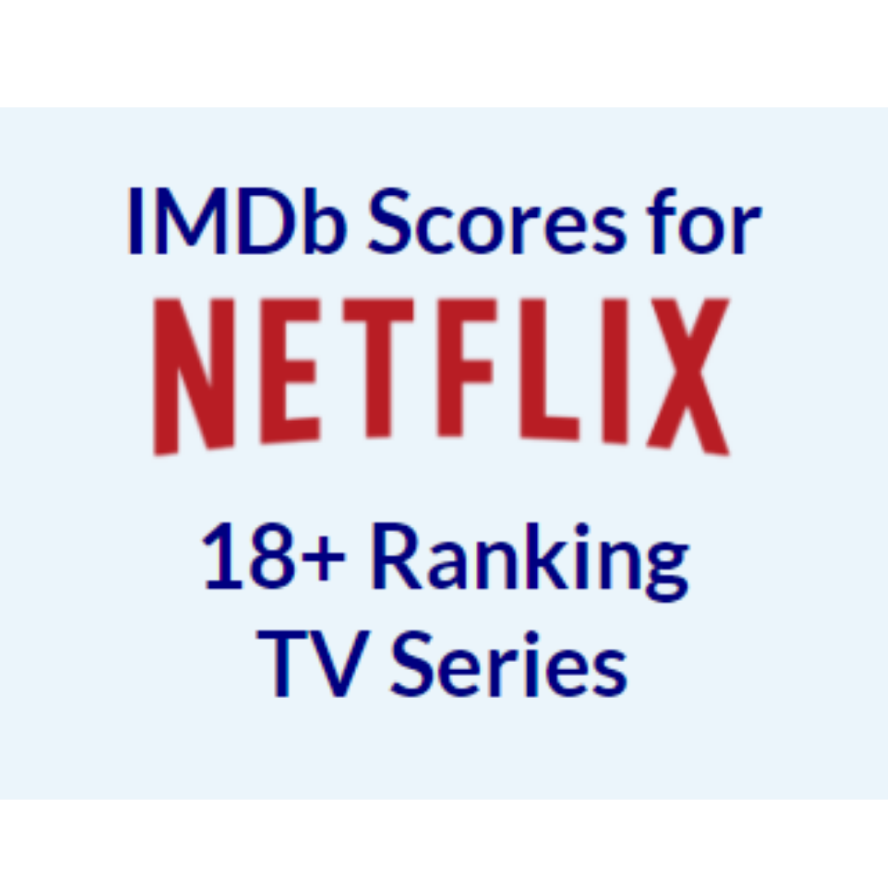
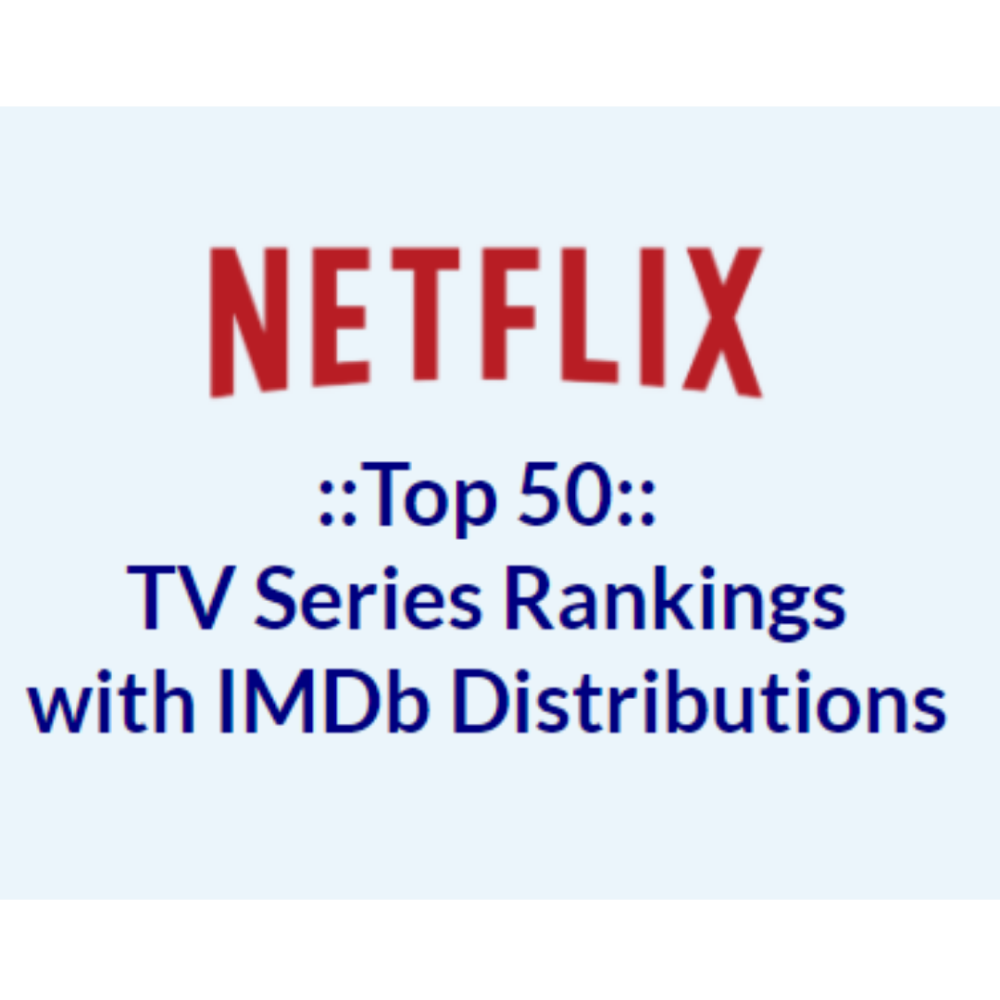
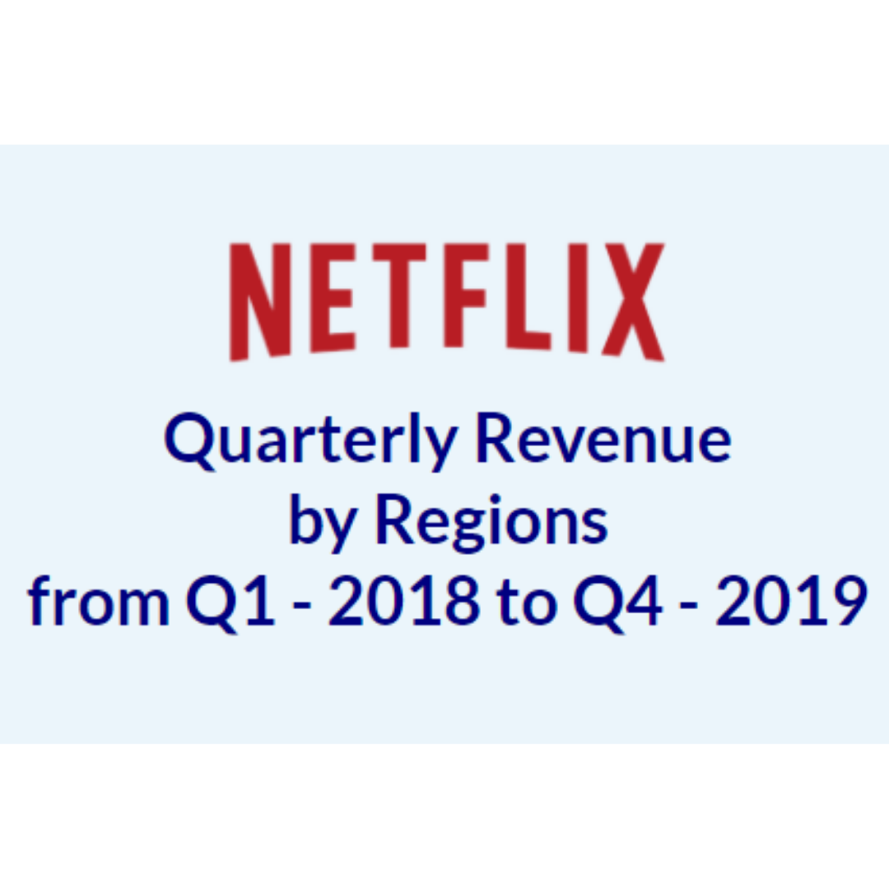

 Assignment 2: Quantities and Amount |
 Assignment 3: Distributions |
 Assignment 4: Time Series Data |
This was my first time I heard about d3.js. I did not know what 'library' means in the world of coding. It took me a lot of time, readings and YouTube videos to finally grapple the idea of chaining method, or why "const" matters in writing codes in JavaScript. I never lost my interest in the d3, though, and I am pleased to be able to present my final portpolio here today.
Since I am an MBA (Summer 2020) and my focus during the MBA program was on Digital Marketing, I knew my visualizations in this course will be about marketing analysis, particularly in the entertainment or music field as I aspire to contribute to the industry here in NYC.
Indeed, learning a new skill is always challenging but finding data sources to analyze itself was very new to me. In the MBA program or even in the real business world, the data is usually given and my job had always been to analyze the addressed problems and find solutions for better decision making. However, in this data analysis world, I came to realize finding own datasets is an initial challenge so that we can make sure there is an appropriate visualization method to apply, to convince our intended target audiences.
During the semester, I mainly accessed Kaggle and Data.World to find datasets on NETFLIX, Spotify, Billboard, and more from the entertainment/music companies. Before I constructed a visualization (even though my technical skills may not have reached to the level), I thought about how to incorporate the images that the company has already established. But to fairly deliver the analysis as a third-party contributer, I also understood that we should not be too obsessed with the desired outcomes.
Technically, numerous of times I suffered from the data or other files not properly loaded for me. Sometimes it's the category names in the csv file, sometimes it's my computer that doesn't close files properly prevented to overwrite the files. One of the solutions during the recurring issues that I had, was to use the online d3 npm package found at https://unpkg.com/d3@6.3.1/dist/d3.min.js, instead of using the d3.js file stored in another location in the local drive (my computer wasn't good at finding it). It can be simply loaded in the <script> tag and it made my life a lot easier.
***
Covid semester... There sure were lots of unprecedented challenges especially this was my first semester in this Data Analysis and Visualizaton program. Everything was online, and unlike normal on-campus classrooms, not having anyone who shares the same interest or concerns around was a very isolating experience that I constantly had to remind myself to reach out for the resources from home. In a way, this helped me focus on my researches unbothered, but I do believe in the power of collaborating and more often than I thought, felt the limit of what one can do.
I am wishing everyone's well-being in these tough times and hope this pandemic be over very soon so that we all can go back to campus and study together in person using the plentiful resources and computers in the labs that the Graduate Center offers us.